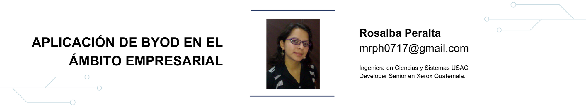

14 Aplicación de BYOD en el ámbito empresarial

14.2 Artículo
Bring Your Own Device es una nueva tendencia tecnológica que fomenta el uso de los dispositivos personales de los empleados, para llevar a cabo las tareas de su trabajo, con la posibilidad de conectarse a la red interna y a los recursos corporativos. [2] y [5]
Esta tendencia nace principalmente debido a 3 razones: La primera razón es que la mayoría de los empleados que tienen credenciales de acceso, como por ejemplo el uso de la VPN o el correo electrónico de la organización, en algún momento utilizan sus propios dispositivos para el acceso, tenga o no la empresa la política de BYOD. [1] y [4] La segunda razón es que actualmente es común ver que los trabajadores dispongan de tecnología más avanzada, productiva y eficaz que la que pone a su disposición la propia empresa. [2] La tercera es la reducción de costos, la implementación de esta tecnología permite ahorrar o eliminar por completo los costos que se producen al adquirir los terminales de trabajo para los empleados. [1] y [2]
Según un estudio realizado por BT más del 80% de los gerentes de TIC piensan que las empresas que cuentan con la política de BYOD obtienen una ventaja competitiva sobre otras, el 64% opina que la productividad se aumentará, 48% piensa que también concederá a los empleados trabajar de forma más flexible y por último el 47% cree que permitirá a los trabajadores servir mejor a los clientes. De igual manera en el estudio se cita que el 42% de los empleados que usan sus dispositivos propios, afirman ser más eficientes y productivos debido a esto. [12]
Estas creencias tienen su justificación, el aumento en la productividad se debe a que las personas se sienten más cómodas trabajando, cuando cuentan con la capacidad de poder elegir sus aplicaciones y dispositivos, así como tener la posibilidad de combinar su vida profesional y personal. También otorga flexibilidad, ya que el empleado puede decidir dónde, cómo, cuándo y con qué herramientas trabajará. [1] y [2]
Lo cual a mi parecer podría abrir las puertas al concepto de WorkAnyWhere, que resulta en otra cantidad de beneficios tanto para la empresa como para los empleados. Empleados felices crea clientes satisfechos. Según un estudio creado por Gallup en el 2009, se concluye que los empleados satisfechos encuentran maneras creativas de resolver los problemas del cliente y se sienten más predispuestos a sugerir ideas para mejorar la compañía. [13]
El grupo IBSG (Internet Business Solutions Group) de Cisco, realizó la encuesta “BYOD: una perspectiva global” con cerca de 5 mil personas de diferentes áreas geográficas (Estados Unidos, Brasil, México, China, India, Reino Unido, Francia, Alemania y Rusia), en ella se puede observar que la implementación de esta tendencia no se limita a una sola región sino que está presente en todo el mundo. [2]
Y como nada es perfecto, BYOD también tiene sus desventajas y complicaciones. El mayor problema que se presenta es el riesgo en el que pone la seguridad de la red corporativa, los empleados desean instalar aplicaciones o bajar archivos que pueden resultar en virus o malware e infectar a la red interna. Otro problema que se da, es cuando ocurre un robo o pérdida del aparto, la persona que posea el dispositivo podría tener acceso a información privada de la empresa. La implementación de BYOD también implica un mayor consumo de los recursos de red y un mayor esfuerzo en los departamentos de soporte y mantenimiento de TI.
Para evitar este tipo de complicaciones se deben crear políticas de seguridad, como por ejemplo, el acceso de usuario y aplicaciones, las contraseñas aceptadas, protección de aplicaciones y datos, protección contra amenazas, seguridad al compartir datos y un sistema de eliminación remota de datos. Es importante disponer de un Movile Device Manager (MDM) que se encarga de asegurar, controlar, gestionar y dar soporte a los dispositivos que tengan acceso a la red. [7]
Como se deben tomar acciones en cuanto a las aplicaciones que serán permitidas o cuando un empleado se retire de la organización, el 91% de los empleados se opone a que la compañía borre su información personal, el 81% se sentiría frustrado si cada vez que desee entrar a Facebook o alguna red social tenga que poner una contraseña de la empresa, el 44% no aceptará BYOD si se les obliga a dejar de utilizar aplicaciones como Dropbox, Google drive, pandora o netflix en sus dispositivos. [4]
Para aprovechar al máximo BYOD se puede utilizar VDI (Virtual Desktop Infrastructure) que no es más que una arquitectura para el servicio de escritorios remotos. Esta tecnología permite adoptar más fácilmente BYOD, ya que el usuario solo se conecta a un escritorio remoto y por lo tanto toda la información y accesos a la red interna no se ven perjudicados por el mal uso de los dispositivos de los empleados. Los empleados pueden instalar todas las aplicaciones que deseen en su dispositivo y solo instalar el cliente de VDI para el acceso a su escritorio remoto designado. Existen varias empresas que brindan este servicio como por ejemplo Citrix, Microsoft o VMWare. [8], [9] y [10]
Un caso real de una implementación de BYOD con la ayuda de VDI es la empresa “Foley & Lardner LLP”, es una empresa con aproximadamente 900 abogados y un personal de apoyo de unas 1,170 personas que se ha destacado por el uso de tecnología avanzada y su alta innovación en la industria legal. Ellos utilizaron VMWare View e implementaron la política de BYOD, disminuyendo así sus costos en la compra de los dispositivos móviles en un 22%. [11]
14.3 Conclusiones
- BYOD es una tendencia que ayuda principalmente en la reducción de costos, aumento de la productividad de los empleados otorgándoles flexibilidad para realizar sus tareas de trabajo y esto conlleva a una mejor atención al cliente.
- No es recomendable adoptar BYOD si no se establecen políticas de seguridad, especificar que dispositivos móviles serán soportados, dejar claro quién es el dueño de las aplicaciones y los datos corporativos y que acciones se realizaran en caso del retiro de un empleado. También es muy importante contar con herramientas como MDM o VDI, de lo contrario en lugar de ser un beneficio se convertiría en un problema para la compañía.
- La implementación de VDI no es una solución absoluta ante los inconvenientes de BYOD pero ayuda en gran manera a resolverlos y a minimizar la resistencia de los empleados ante el miedo de no poder utilizar su dispositivo como lo desee.
- Lo más recomendable es utilizar MDM y VDI para la adopción de BYOD. MDM no es intrínsecamente un componente de seguridad pero VDI ofrece capacidades de seguridad completas. Por lo tanto, ambas soluciones se complementan muy bien.
14.4 Referencias
- [1] BYOD: una perspectiva global. http://www.cisco.com
- [2] ¿Qué es BYOD?, ventajas e inconvenientes.http://computerhoy.com
- [3] 10 consejos de seguridad ante la práctica BYOD. http://www.computerworldmexico.mx
- [4] De la Seguridad al BYOD. http://www.isaca.org/Education
- [5] Ventajas y retos del fenómeno BYOD en la movilidad corporativa. http://www.telecomunicacionesparagerentes.com
- [6] ¿Puede BYOD dar nueva vida a los escritorios remotos? http://www.cio.com
- [7] 5 trampas de BYOD y cómo evitarlas. http://www.cio.com
- [8] Aprovechando VDI para permitir BYOD. https://www.ivdi.com
- [9] VDI soluciona algunos de los problemas críticos de BYOD. http://www2.wwt.com
- [10] Implementar y administrar los servicios de BYOD y VDI. http://www.slideshare.net
- [11] Con VMware View, Foley & Lardner LLP aplica BYOD y reduce el 22% de los costes en la compra de teléfonos celulares. http://www.vmware.com
- [12] FBYOD brinda una ventaja competitiva, según los IT managers. http://www.btplc.com